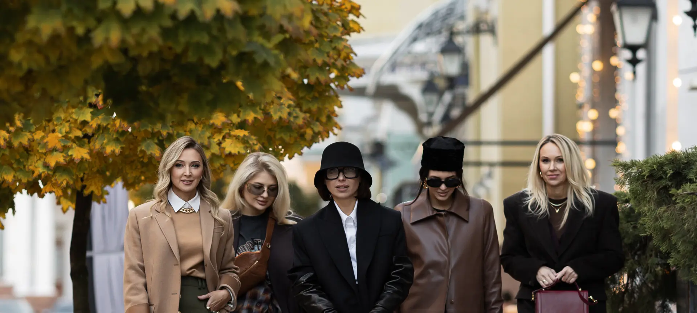
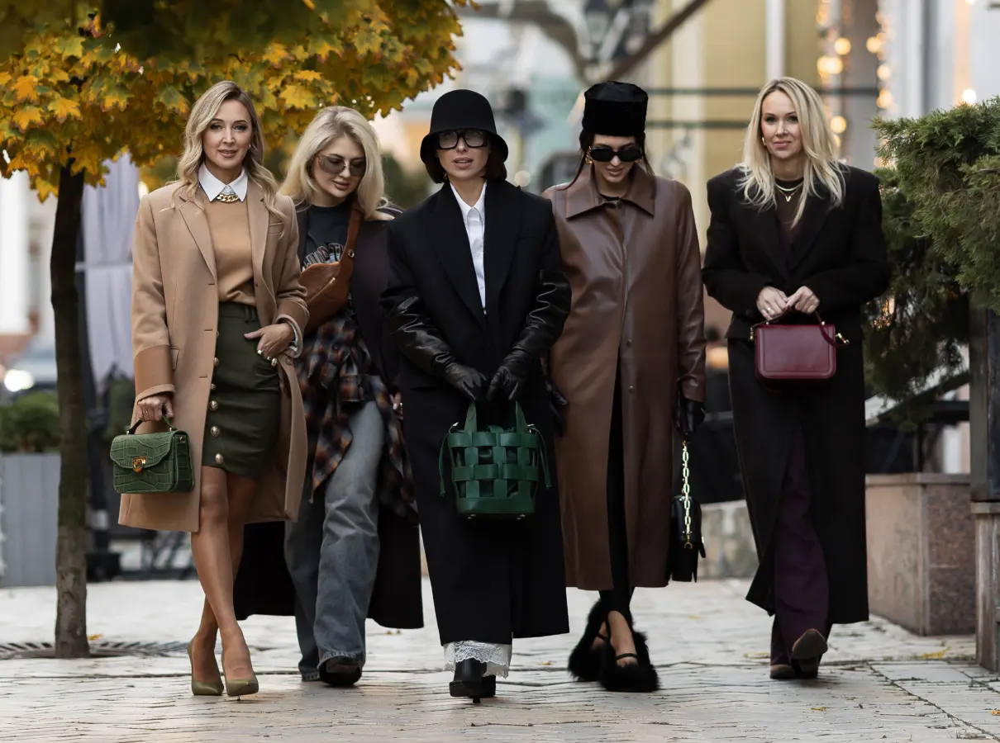
Сумка — серце образу
Жіноча сумочка давно перестала бути лише функціональною річчю, перетворившись на невід'ємний елемент стилю
Нині це значно більше, ніж просто аксесуар. Вона здатна диктувати правила моди, формувати образ і транслювати характер. Саме цю ідею втілює новий fashion-проєкт Viva!, у центрі якого — сумки українського luxury-бренду Verdoni.
У межах проєкту відомі українські стилістки та fashion-інфлюенсерки не лише приміряли сумки, а й будували навколо них повноцінні модні образи.
Вони розповіли, як сумка може стати джерелом натхнення, і поділилися своїм баченням сучасного стилю, в якому ключову роль відіграє саме цей аксесуар.
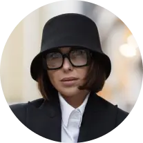
Юлія Пунько
Блогерка, fashion- та beauty-інфлюенсерка
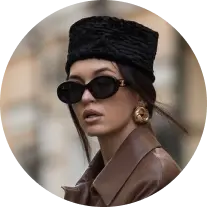
Тетяна Мавродій
Стилістка, засновниця школи стилю u.maison, fashion-інфлюенсерка
Марина Арістова
Коуч з особистого масштабування, бізнесвумен, авторка подкасту «Думка дня»
Анастасія Геращенко
Персональна та зіркова стилістка, іміджмейкерка
Нова ера сумок
Колись аксесуари сприймалися виключно як деталі, що доповнюють уже сформований вигляд. Проте з плином часу і
трансформацією моди усе змінилося: сумка стала точкою відліку, навколо якої вибудовується решта образу. Вона виражає
індивідуальність, відображає настрій, а подекуди навіть є персональним стейтментом, адже транслює певну позицію та
погляд на світ.
Вироби Verdoni поєднують у собі досконалий дизайн, преміальні матеріали і майстерну роботу.
Саме тому кожна сумка унікальна, ідеально збалансована між стилем та практичністю. Вона доречно виглядає як на вулицях
мегаполіса, так і на світських заходах.
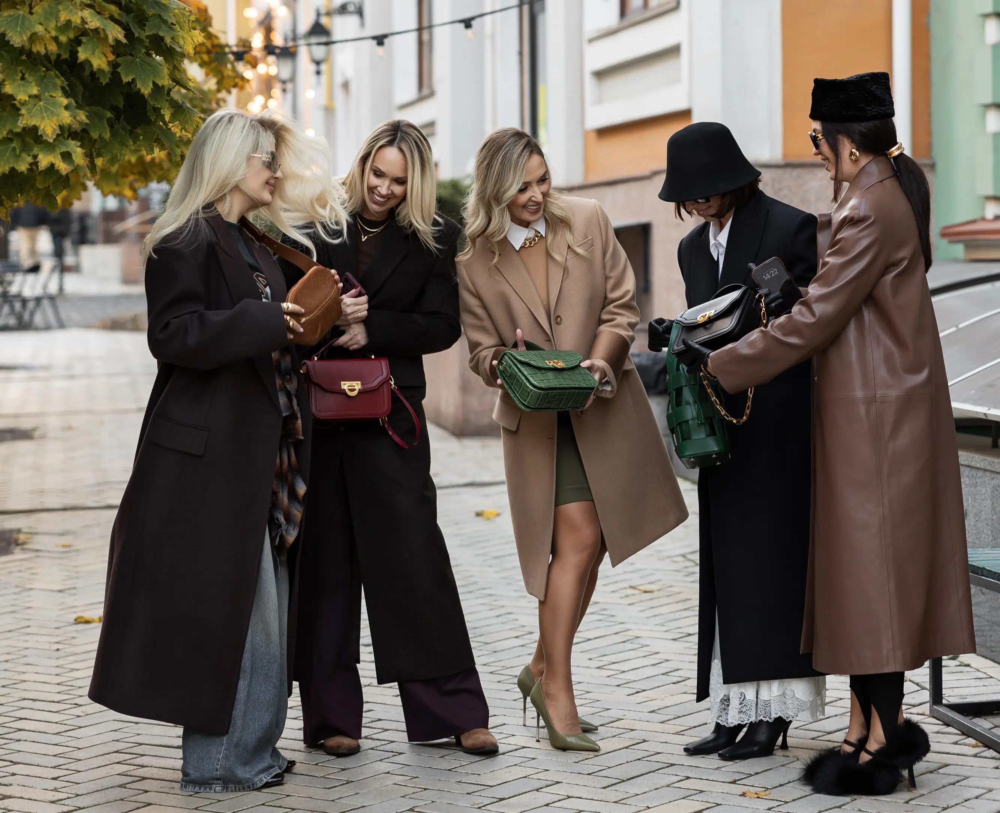
Сумка — це магніт, який першим притягує погляд. Вона може бути центром уваги, і з цією роллю ідеально впорається
лаконічний дизайн від Verdoni.
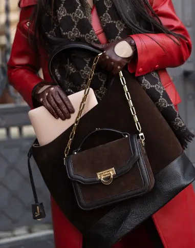
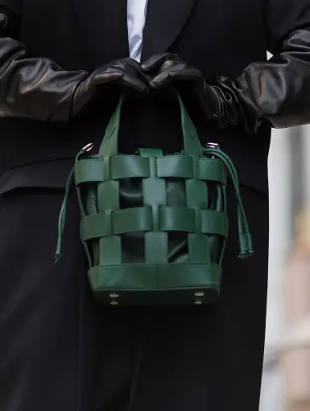
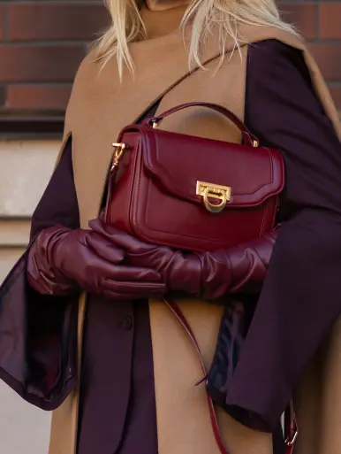
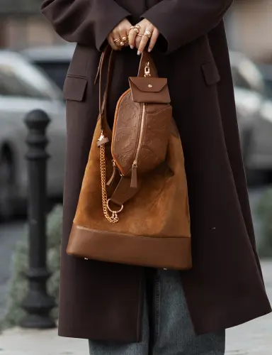
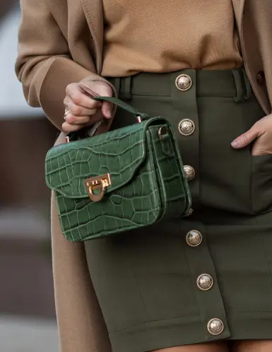
Юлія Пунько
Блогерка, fashion- та beauty-інфлюенсерка
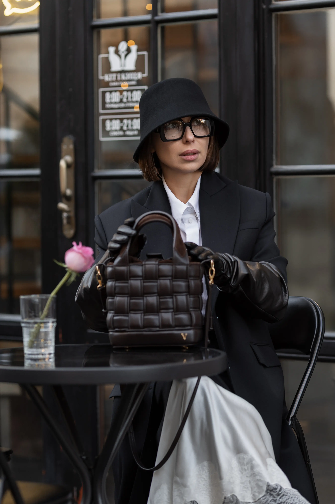
Друга сумка — більш яскрава і водночас лаконічніша за рахунок меншої кількості деталей. Але
відтінок цього зеленого —
благородний, дорогий. Його теж легко вписати у ваші образи. Тому не бійтеся експериментувати з аксесуарами в
різних
кольорах.
Мода — це гра. Грайтеся!
Я дуже люблю використовувати у своїх образах аксесуари різних кольорів. Колір робить look більш цікавішим, його відразу
хочеться розглядати. Але треба завжди знати міру, бо коли кольору забагато, то можна з fashion-діви перетворитись на
fashion-кринж. Тому раджу починати свої експерименти з кольором саме з сумок, якщо ви ще не дуже впевнений у собі модний
експерт. Це більш безпечний варіант.
Саме так я зробила в своєму сьогоднішньому образі. На мені класичний чорно-білий look, а сумки стали акцентами.Одна
сумка-корзинка на мені — в глибокому коричневому кольорі, який одночасно є базовим і трендовим у цьому сезоні.
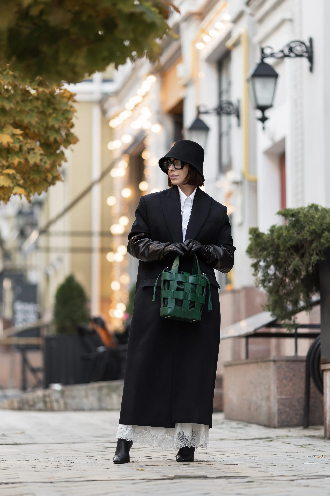
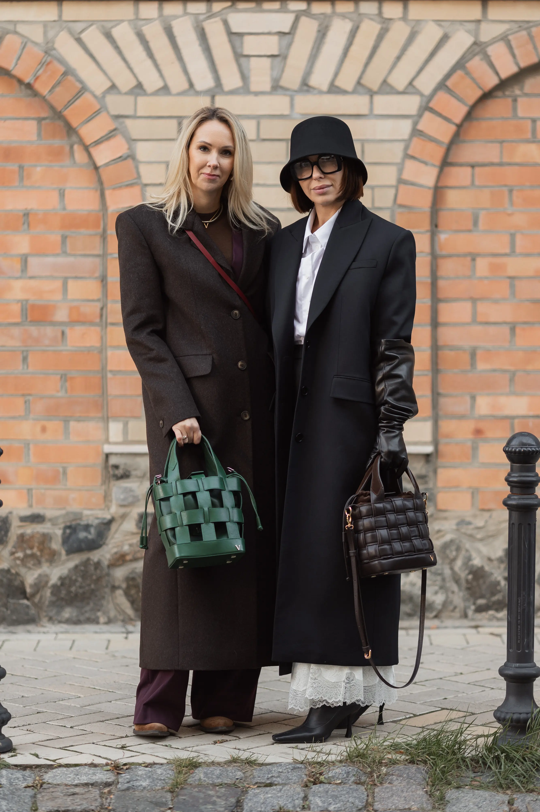

Коментар від авторки бренду Verdoni Марини Гайович:
Тетяна Мавродій
Стилістка, засновниця школи стилю u.maison, fashion-інфлюенсерка
Стиль для мене — це спосіб виразити себе через одяг і зануритися в особливий стан. Усе, що нас оточує у цьому світі,
впливає на нас передусім енергетично. Речі у нашому гардеробі не є винятком. Кольори, форми, текстури, метали — це
своєрідні психологічні ключі, які допомагають справити певне враження на інших людей. І навіть один аксесуар здатен
створити історію образу.
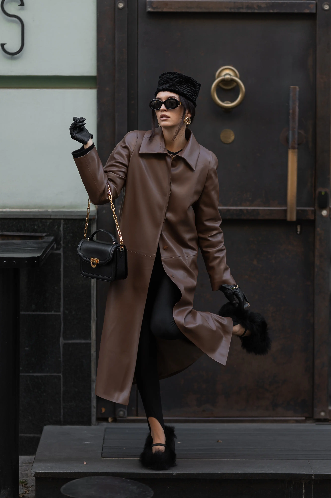
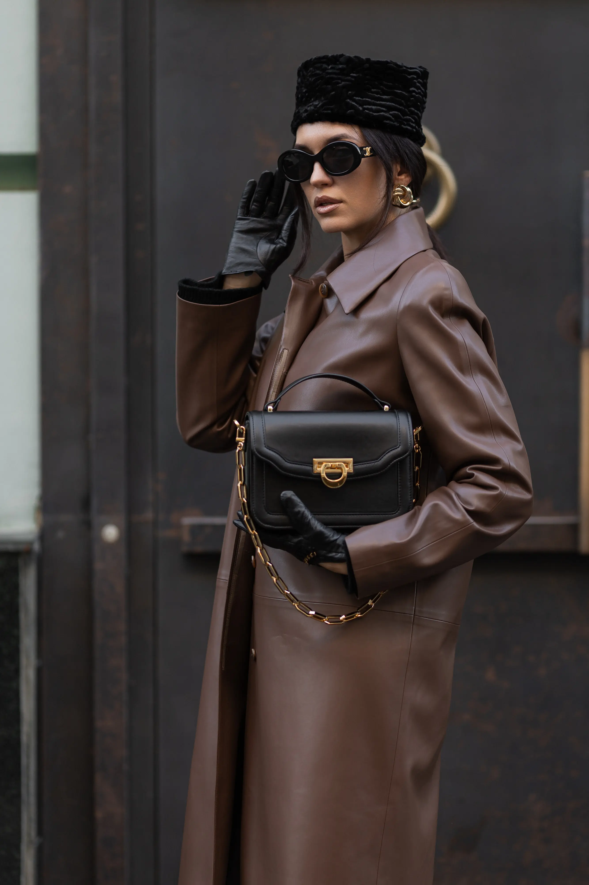
Розглянемо на прикладі моєї сумки від бренду Verdoni. Її структурна форма підкреслює мою самодостатність, а також додає
образу класичності та елегантності. Золота фурнітура відображає мою емоційність, додає вишуканості й створює ефект
дорогого аутфіту. До речі, цей ефект працює з будь-яким металом «під золото». Невеликий розмір сумки натякає, що я
більше про богемне життя, ніж про офісні будні.
Начебто всього один аксесуар, а так багато може розповісти про жінку й створити певне враження для оточення!
Марина Гайович
засновниця бренду Verdoni
Стиль бароко — це моя нескінченна пристрасть. У ньому поєднуються витонченість і велич, які завжди мене надихали. Я
створюю сумки з любов’ю до кожної деталі, прагнучи передати в них щось більше, ніж просто красу — історію, характер,
емоції.
Але головна моя любов — це жінки, для яких я працюю. Кожна з них унікальна, і моє завдання — допомогти їм підкреслити
свою індивідуальність, розкрити силу і чарівність, які вони несуть у світ.